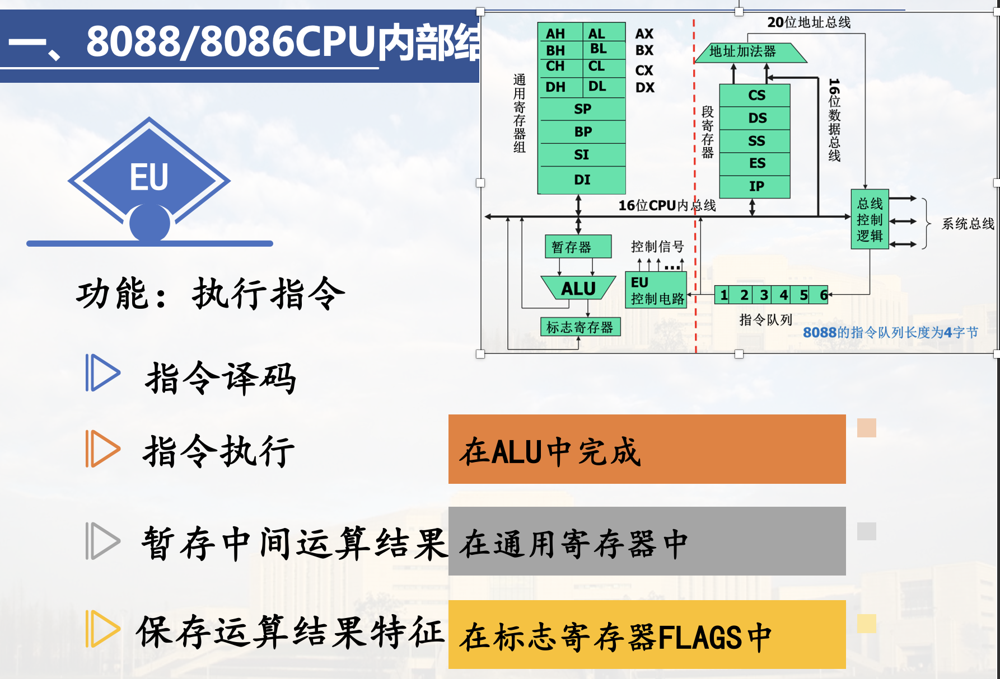
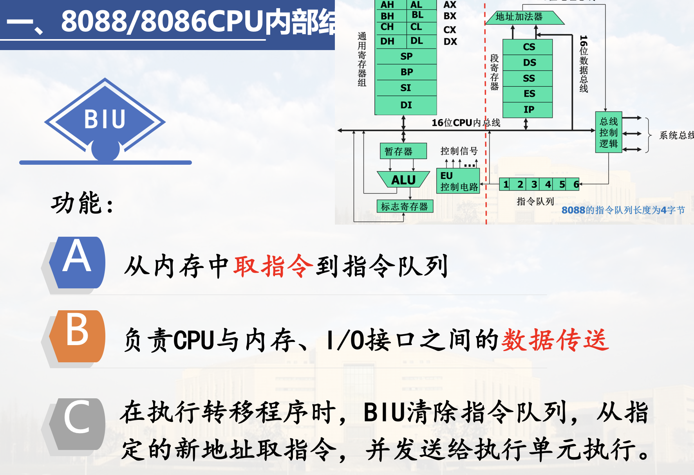
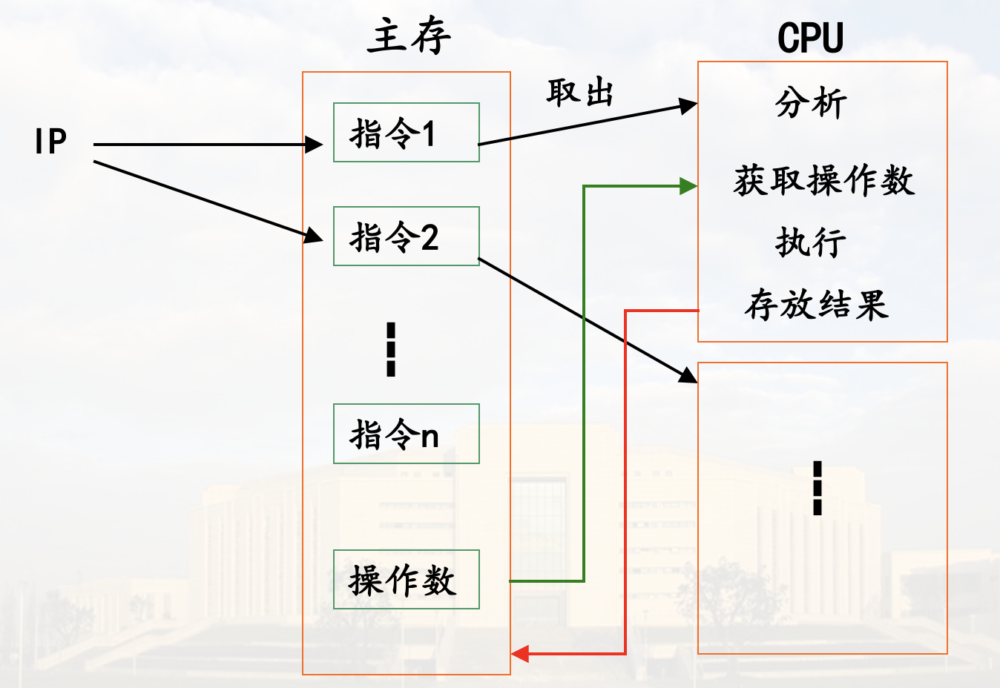
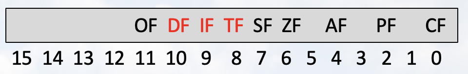
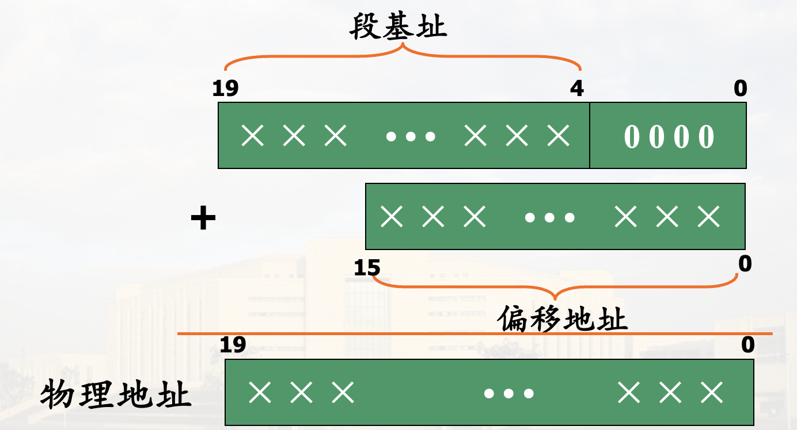
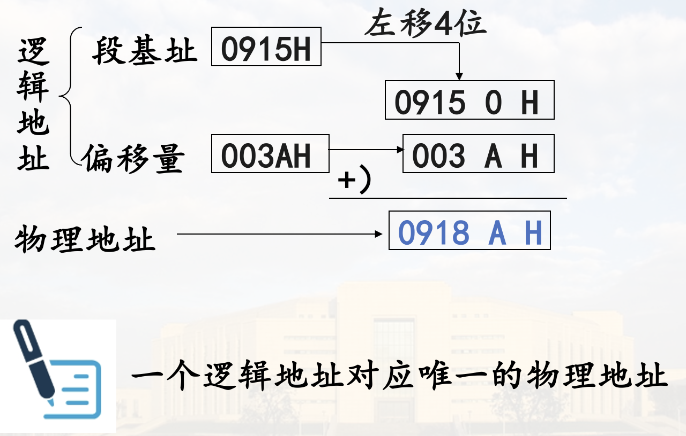

8086/8088微处理器
特点及工作模式
一. 特点
1. CPU内部结构 采用并行流水线工作方式
将CPU划分成两个功能部件: 执行单元EU、总线接口单元BIU
并设置指令预取队列,实现流水线工作

分析指令时总线空闲, 可以取第二条指令, 于是两条指令的执行上时间有重叠
如此CPU和总线一直在忙, 减少了执行多条指令的执行时间
2. 存储器寻址部分 对内存空间实行分段管理
主存空间1M, 将内存空间分为多个逻辑段
每个逻辑段不超过64K个单元
每个逻辑段通过段基(地)址区分(高16位)
段内每个单元的地址为相对于本段第一单元的距离，称为偏移地址(相对地址)

如
10000H1000:0
3. 工作模式 支持多处理器系统
通常有个主处理器, 如8086; 除此之外还有协处理器(执行特殊运算), 如8087、支持输入输出管理的处理器, 如8089
两种工作模式: 最小模式、最大模式

最小模式
单处理器模式，控制信号较少，一般可不必接总线控制器

最大模式
多处理器模式，控制信号较多，通过总线控制器与总线相连

引脚及功能

括号前的为最小模式下的名字, 括号内为最大模式下的名字
8088 为准16位: CPU内寄存器为16位, 总线8位
一. 最小模式下8088的引线及功能
1. 地址线和数据线

2. 主要控制信号和状态信号

DT/R控制数据收发器
READY用于同步扩展总线判断是否需要在总线周期内插入一个时钟周期, 高电平表示数据准备好, 不会插入时钟周期

3. 中断请求和响应信号

INTA是对INTR的响应,NMI总是响应
4. 总线保持请求与响应信号
针对DMA请求

8088与8086引线的差别
-
数据总线宽度不同
8088 外部总线宽度为8位
8086 外部总线宽度为16位内部都是16位
-
访问主存和IO信号的差异不同
8088: 表示访存
8086: 表示访存
二. 最大模式下8088的引线及功能

- RQ/GT 一个引脚同时进行请求和响应(分时复用), 编号低的优先级高
- 总线封锁: 在一条指令执行时封锁总线控制权
书后面有附表
8086/8088 功能结构 IM
一. 功能结构

寄存器都是16位


对于清楚指令队列的情况: 现在有分支预测缓解这种情况
指令队列的存在使EU和BIU两个部分可并行工作，即实现指令的并行执行
- 提高了CPU的效率
- 降低了对存储器存取速度的要求
二. 内部寄存器
含14个16位寄存器
- 8 个通用寄存器
- 4 个段寄存器
- 2 个控制寄存器
注意理解各寄存器的作用 IM
通用寄存器 8 个
通用寄存器可以存放数据, 各寄存器又有特殊作用
数据寄存器
AX BX CX DX
每个数据寄存器可拆分为2个8位寄存器单独使用
- AX AH, AL
其中AX AL又称为累加器: 存放中间结果; 所有IO指令都通过AX与接口传输信息 - BX BH, BL
基址寄存器: 在间接寻址中用于存放基地址 - CX CH, CL
计数器: 用于在循环或串操作指令中存放计数值多指令构成的循环语句可能不适用CX, 如 for loop
- DX DH, DL
数据寄存器; 也可用于IO端口间接寻址(IN、OUT指令端口号较短时可直接写在指令内(8位), 否则写在DX中)、在32位乘除法运算时, 存放高16位数
地址指针寄存器
SP BP
- SP
堆栈指针寄存器,其内容为栈顶的偏移地址(如果不用堆栈那就是普通的数据寄存器) - BP
基地址指针寄存器, 常用于在访问内存时存放内存单元的偏移地址
作为基址寄存器
用BX表示所寻找的数据在数据段(如高级语言中的全局变量)
用BP则表示数据在堆栈段(如高级语言中自己定义的局部变量)(又如在不动SP的前提下访问堆栈里的内容)
变址寄存器
变址寄存器在指令中常用于存放数据在内存中的偏移地址
- SI 源变址寄存器
- DI 目标变址寄存器
控制寄存器 2 个
指令指针寄存器IP
存放预取指令偏移地址

标志寄存器FLAGS

黑色: 状态标志位
- CF (Carry Flag)
进位标志位。加(减)法运算时，若最高位有进(借)位则CF=1 - PF (Parity Flag)
奇偶标志位。运算结果低8位中“1”的个数为偶数时PF=1 - AF (Auxiliary Carry Flag)
辅助进位标志位。加(减)操作中，若Bit3向Bit4(半字节)有进位(借位)，AF=1 - ZF (Zero Flag)
零标志位。当运算结果为零时ZF=1 - SF (Sign Flag)
符号标志位。当运算结果的最高位为1时，SF=1 - OF (Overflow Flag) 溢出标志位。当算术运算的结果超出表示范围时，OF=1
红色: 控制标识位
- TF (Trap Flag)
陷井标志位，也叫跟踪标志位。
TF=1时，单步执行方式 - IF (Interrupt Enable Flag)
中断允许标志位,IF=1则CPU响应中断请求 - DF (Direction Flag)
方向标志位，串操作的方向
DF=0，按增地址方式；DF=1，按减地址方式
例
给出以下运算后各状态标志位的状态
010110110
+11110100

段寄存器

代码段: 存放指令
数据段: 存放自己定义的数据
堆栈段: 用于堆栈
附加段: 也存放数据, 多用于串操作指令(将一个串搬到另一个地方, 有些指令要求两个串不在同一个段)
不需要全部存在段基址: 一个段的最低地址(第一个单元)的高16位, 人为约定
存储器组织 IM
一. 物理地址与逻辑地址
物理地址
指每个内存单元在整个内存空间中的唯一地址
物理地址空间取决于地址线位数
8086/8088CPU地址线20根，每个存储单元物理地址20位，可寻址最大内存容量为1MB(8086/8088存储器按字节编址)
1MB存储单元的地址范围为
00 ... 0(20位) ~ 11 ... 1(20位)
为了方便书写，在源程序中常用5位十六进制数来表示一个存储单元的地址

注意五个F之前要加个0(在机器上使用)
字单元的地址与存放规则
两个相邻字节单元构成一个字单元
字单元的地址为两个字节单元中较小地址单元的地址
字数据的存放规则是低8位放在较低地址字节单元，高8位放在较高地址字节单元（小端模式）

逻辑地址
存储器分段管理, 将存储空间分为若干逻辑段
每个存储单元的地址由16位段基址、16位偏移地址两部分组成，构成逻辑地址
XXXXH:YYYYH
逻辑段的起始单元称为段首, 其地址叫段首地址
偏移地址是相对于本段起始单元的距离


地址转换
逻辑地址 物理地址
物理地址=段基址×16+偏移地址



物理地址 逻辑地址

逻辑段的特点
逻辑段最大长度64K
因为有16位
一般用不到那么大
每个段的起始地址必须是一个小节的首址(低4位为0)
逻辑段之间的关系：邻接、间隔、部分重叠的和完全重叠
任一时刻，一个程序最多只能访问4个逻辑段
分段的优点: 程序只需要管理段内偏移地址, 不需要管理段地址(有操作系统管理), 而实际执行的时候, 又有方法计算出物理地址
例

二. 段寄存器的使用
8088/8086对段寄存器使用的规定

注意串操作的目的串只能设置为ES
三. 堆栈及堆栈段段使用
堆栈的概念
堆栈是按特定规则访问的存储区
主要用于暂存数据以及在过程调用或处理中断时保存断点信息
堆栈一般分为专用堆栈存储器和软件堆栈
软件堆栈: 由程序设计人员用软件在内存中划出的一块存储区，8086/8088采用这种方式
堆栈指针 SP (Stack Point)
寄存器SP指示栈顶位置，在入栈、出栈操作中提供间接寻址

注意图里的SP是相对
00000H的距离
8088/8086 堆栈的组织
在8086/8088微机中堆栈是由堆栈段寄存器SS指示的一段存储区

注意SP一开始在栈底底下一个单元(按字)
8086/8088 堆栈的使用
- 数据在堆栈中以字为单位存放，低8位放在较低地址单元，高8位放在较高地址单元
- 堆栈初始化时SP指向栈底+2单元，其值就是堆栈的长度,不大于64K字节
- SP表示栈顶单元与堆栈段基址之间的距离(字节数)
- 当SP为最大(初始)值时，表示堆栈为空
- 当SP为0时，表示堆栈全满
- 当用户程序中要求的堆栈长度超过64KB时，可以设置多个堆栈段
堆栈使用例
堆栈段长度为 202H 注意最后一个单元 SP初值
总线时序
一. 最小模式下的总线

8282: 地址锁存器(类似三态门)
ALE: 地址锁存有效, 为1是三态门才打开
8286: 数据收发器
DEN: 控制数据收发器打开与否, 为0打开
二. 最大模式下的总线

多了总线控制器
三. 总线时序
了解即可
总线周期
- CPU完成一次访问内存/接口操作所需要的时间
- 一个总线周期至少包括4个时钟周期
总线时序
CPU各引脚信号在时间上的关系
8088 读周期

8088 写周期

延长的总线周期
编码炸了, 回头补上